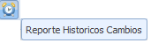

Se ingresa mediante:
Posee las siguientes secciones:

1: Opciones del Adm. Perfiles como ser: Crear Perfil, Editar Perfil, Adm. Opciones, Adm. Botones y Adm Aplicaciones.
2: Sección de busqueda, donde se introducen los criterios para realizar busqueda en el contenido del grid. Tambien opcion de impresion filtro por app:
Para visualizar los historicos mediante  se debe seleccionar un registro de usuario inicialmente caso contrario:

Una vez seleccionado el usuario se visualizara:
Para visualizar los historicos de las asociaciones del menu del perfil mediante se debe seleccionar un registro de usuario inicialmente caso contrario:
Una vez seleccionado el usuario se visualizara:

3: Sección del grid, donde se muestran todos los perfiles existentes en la Base de Datos, con la opciones:
Ordenar de forma ASC el grid de acuerdo a este campo seleccionado.
 Ordenar de forma DESC el grid de acuerdo a este campo seleccionado.
Ordenar de forma DESC el grid de acuerdo a este campo seleccionado.
Solo se debe hacer click en la columna que se desea ordenar.
4: Paginacion del grid.
5: Formulario de perfil, donde se visualizan mas detalles del perfil. (Campos con asterisco son obligatorios)
6: Grid relacion opciones, contiene dos tabs.
Contiene Secciones, como:
Se visualiza las diferentes opciones de menu para cada perfil.

Se visualiza los botones por opcion de menu.

Se visualiza las aplicaciones relacionadas, esta opcion solo se presenta para el administrador del sistema de autorizacion.
Created with the Personal Edition of HelpNDoc: Easy to use tool to create HTML Help files and Help web sites